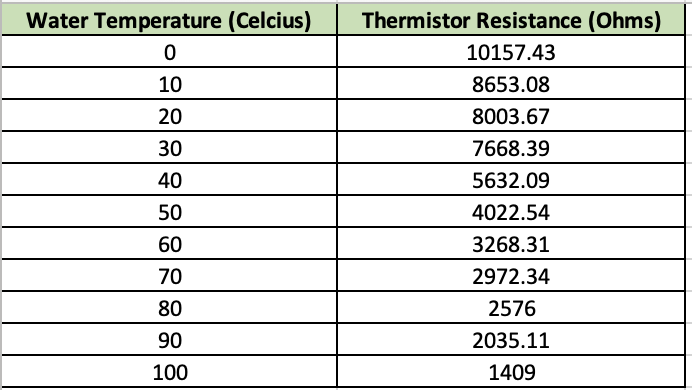
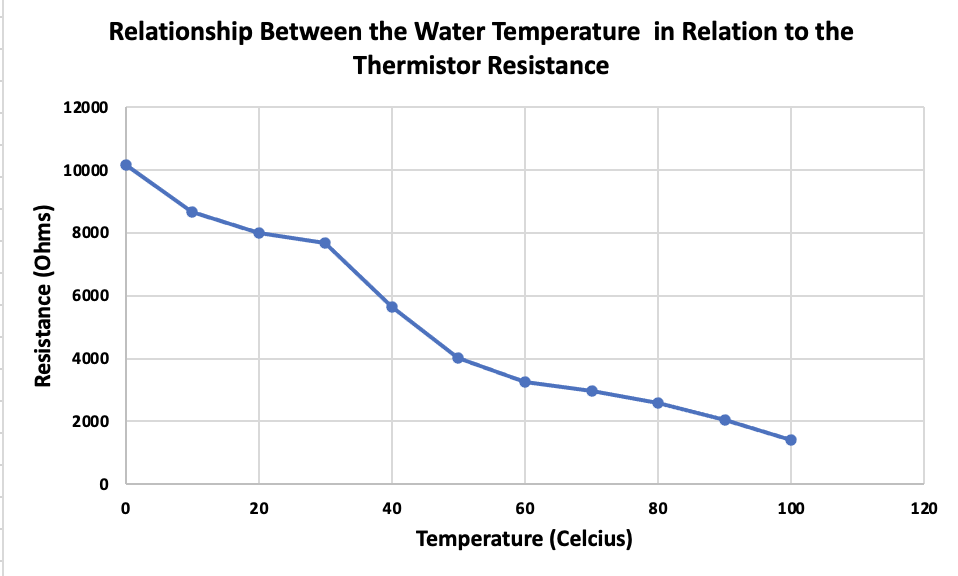
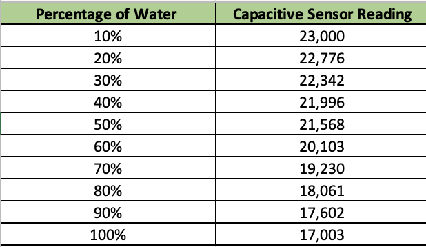
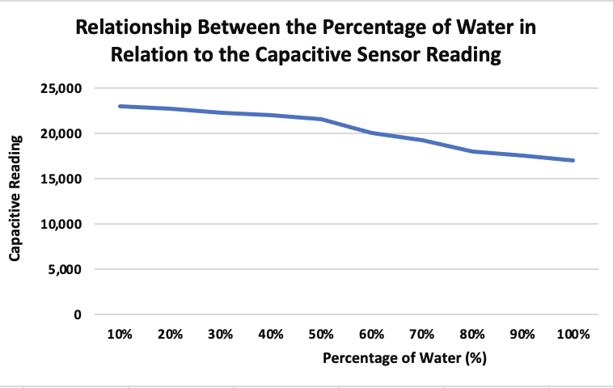

Assignment
For this weeks assignment we had to use a sensor to measure a physical quantity with a microcontroller. Then, callibrate the sensor (describe the range between its min and max values, and wether/ how you can control this range). Lastly, show data in the form of a table or graph. We had to do the same as the first assignment, but this time with a capacitive sensor you have fabricated yourself using copper tape, aluminum foil..etc.
"Assignment #1 Temperature Sensor "
Introduction
The materials I used were: Arduino Board, Thermistor, Wires, Resistor, and Thermometer. Also, wanted to add that the type of thermistor I used was an NTC (Negative Temperature Coefficient) which basically means that resistance decreases as temperature begins to rise.
The process
I started by following this website that provided me with an explanation on how to hook up my thermistor here which basically means that I had to connect at wire to 5V, another to GND and the other to A0. I aslo used a resistor that had a resitance of 10K Ohms as my thermistro had a resistance of 10K Ohms. I realized there are many possible ways to hook up the thermistor, and decided to implement aligator clips so that it could be easily sumerged in water when testing at the different temperatures. I will providee below images of how my curicut ended up looking.

Once I had this cirucit done, I proceed to do the code which is a version of the one from the website but a bit modified so that its bale to display both the thermistor resistance and temeparture values in the serial motor.
Code
int ThermistorPin = 0;
int Vo;
float R1 = 10000;
float logR2, R2, T;
float c1 = 1.009249522e-03, c2 = 2.378405444e-04, c3 = 2.019202697e-07;
void setup() {
Serial.begin(9600);
}
void loop() {
Vo = analogRead(ThermistorPin);
R2 = R1 * (1023.0 / (float)Vo - 1.0);
logR2 = log(R2);
T = (1.0 / (c1 + c2 * logR2 + c3 * logR2 * logR2 * logR2));
T = T - 273.15;
Serial.print("Resistance: ");
Serial.print(R2);
Serial.print(" Ohms\n");
Serial.print("Temperature: ");
Serial.print(T);
Serial.println(" Celsius\n");
delay(500);
}
Testing
To test the functioning of my temperature sensor, I used different temperatures of water to callibrate my thermistor. For that, I started by preparing cups with water at various temperatures at 0, 10, 20, 30, 40, 50, 60, 70, 80, 90, 100 degrees celcius. For this, I had to get a thermometer to ensure that the temperature was accurate. I also had to boil the water and get it from dinning hall. Then, submerged the thermistor into the different cups and record the thermistor reading sin the form of resistance (ohms). It took me a lot of tiume to obtain the datas as wanted to ensure that thr measurement were accurated.

Results
After a solid hour testing this is what I got. This first table its juts showcasing the correlation analysis between the resistance of a thermistor in relation to water temperature. The thermisistor have a negative temperature coefficient that leads to changes in resistance with variation to temperature. The table provides with an accurate represenation of the resistance values at the different water temperatures. The thermistor resistancr were obtained with the usage of Arduino microcontroller. According to the data, some trends can be perceived.
For a better visual representation, I plotted the graph where the x axis is resistance ( ohms) and the y axis the respective temperatures of water. This graphs shows the correlation analysis between the resistance of a thermistor in relation to water temperature, and as it can be appreciate that as temperature increases from 0 to 100, then thermistor resistance decreases. It starts with 10000, and goes all the way to a value of 1409Ω. This is due to the fact that thermistors material have a negative temperature coefficent where temperaturei inncreases, charger carriers gain more energy that leads to higher mobility, but this results in higher availbility fo this chargees that ends up having a low resistance.
"Assignment #2 Capacitive Sensor "
Introduction
I decided to do a Capactivie sensor using copper and TX-RX sensing.
The process
For this, I connected alligator clips to the two tape pieces of copper, and hooked them to other wires that were plugged into the arduino board, with a pin to write on and and a pin to read from. I decided to measure the amount of water in a cup. For that, I taped the piece of copper into the outsides of the cup and started to take measurements after drinking a certain amount of water.
Once i had this done, I proceed to do the code. Luckily, the ARDUINO IDE program was able to provide me with the code, and so I used it!!!!!!
int analog_pin = A3;
int tx_pin = 4;
int read_high;
int read_low;
int diff;
void setup() {
pinMode(tx_pin, OUTPUT); // Pin 4 provides the voltage step
Serial.begin(9600);
}
void loop() {
digitalWrite(tx_pin,HIGH); // Step the voltage high on conductor 1.
read_high = analogRead(analog_pin); // Measure response of conductor 2.
delayMicroseconds(100); // Delay to reach steady state.
digitalWrite(tx_pin,LOW); // Step the voltage to zero on conductor 1.
read_low = analogRead(analog_pin); // Measure response of conductor 2.
diff = read_high - read_low; // desired answer is the difference between high and low.
Serial.println(diff);
}
Testing + Results
To test the functioning of my capacitve sensor, I used different percentages of the water in the cup that I drunk, which were 10%, 20%, 30%, 40%, 50%, 60%, 70%, 80%,90%, 100%. The results of this test were much higher regarding to the capacitive reading, but still the line went down despite the values. For this, I had to get a thermometer to ensure that the temperature was accurate. I also had to boil the water and get it from dinning hall. Then, submerged the thermistor into the different cups and record the thermistor reading sin the form of resistance (ohms). It took me a lot of tiume to obtain the datas as wanted to ensure that thr measurement were accurated. The first table its just showcasing the correclation analysis between the capacitive reading in relationship to the percentage of water drank.The table provides with an accurate representation of the capacitive sensor values at the different percentage of the water in the cup that I drank. For a better representation, I plotted the graph where the x axis is capacitive sensor values, and the y axis the percentage of water in the cup that I drank. As it can be appreciate, as the percentage of water level increases from 10 to 100, the capacitive sensor reading decreases. It begins with a value of 23,000, and goes all the way to 17,000.
 